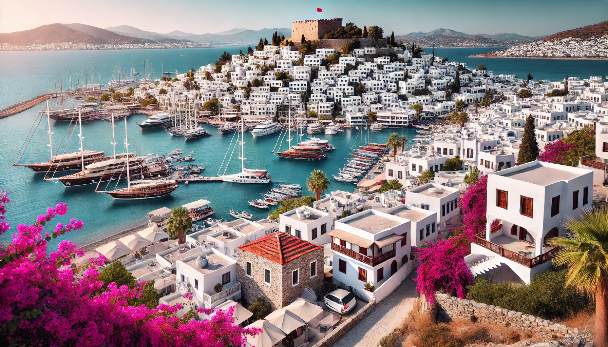

Stad in Turkije
Bodrum, stad voor cultuurliefhebbers, watersporters en zwemliefhebbers. Deze zuidelijk gelegen stad staat bekend om de diverse watersportmogelijkheden. Daarom vind je er ook een grote jachthaven vol zeilboten. Populair zijn ook de beschutte baaien van het gezellige Bodrum. Ideaal om te zwemmen, snorkelen en duiken. Maar ook cultuurliefhebbers kunnen zich hier zeker vermaken. Bodrum heeft een rijke geschiedenis waar nog steeds veel van te zien is. Niet alleen de geschiedenis van Bodrum is rijk, ook de uitstraling oogt vrij rijk. De badplaats heeft een wat mondaine uitstraling dankzij de mooie jachten, dure winkels en mooie restaurants. Op deze pagina vind je vele toeristische tips zodat je niets hoeft te missen tijdens je vakantie. Bijvoorbeeld wat je er kan doen, de stranden, bezienswaardigheden en hotels.
Klimaat
Bodrum is een populaire badplaats aan de Egeïsche kust en heeft een Middellandse Zeeklimaat, met warme zomers en milde winters. De stad wordt vaak het St. Tropez van Turkije genoemd en wie er ooit geweest is, begrijpt waarom Bodrum zo populair is. Alles wat je nodig hebt voor een geslaagde vakantie vind je hier, van mooie stranden tot een geweldig uitgaansleven. Ook de fanatieke watersporter komt aan zijn trekken dankzij de legio activiteiten die hier te vinden zijn. De zomers zijn over het algemeen net iets minder lang en warm dan aan de zuidkust. In de zomer ben je in Bodrum vrijwel gegarandeerd van goed weer. In juli en augustus is de kans op regen of onweer minimaal. De zon laat zich overdag bijna continu zien. Bewolking op grote schaal is hartje zomer een zeldzaamheid. De felle zon voert de temperaturen in Bodrum flink op. De middagtemperaturen liggen tijdens de zomervakantie gegarandeerd boven de 30 graden. Gemiddeld moet je rekenen op maxima van ongeveer 33 graden, waarbij de kans twintig procent is dat het kwik oploopt naar 35 graden of hoger. Vanaf september ontstaat er een kleine kans op neerslag. Wie in september een strandvakantie in Bodrum wil vieren, hoeft zich niet al te druk te maken over slecht weer. Gemiddeld is het 25 van de 30 dagen in september geweldig strandweer, is het 3 dagen goed strandweer en krijgen slechts twee dagen het predicaat 'redelijk' of matig'.
Traditioneel eten in Bodrum
De Turkse keuken kent invloeden van de Griekse, Arabische en Kaukasische keuken. De diversiteit van de Turkse keuken laat zich goed zien in het voorgerecht, de mezeler. Dit zijn een soort tapas, waarbij u kunt kiezen uit een grote verscheidenheid aan hapjes en salades. In veel restaurants worden ze op een buffet gepresenteerd en kunt u zelf pakken of aanwijzen wat u wilt hebben. In de kustplaatsen en oude vissersdorpen kunt u zeer goede visgerechten eten. Wanneer u vis bestelt moet u niet vergeten vooraf de prijs en het gewicht van de vis af te spreken, anders zult u bij de afrekening voor een zeer onaangename verrassing komen te staan. Houdt u niet van vis dan kunt u één van de heerlijke traditionele stoofgerechten proberen, die met rund- of lamsvlees worden bereid. Varkensvlees zult u nergens op de kaart vinden, omdat moslims dit niet mogen eten. Het nagerecht bestaat meestal uit vers fruit of ijs. Houdt u van gebak en zoetigheid, loopt u dan eens een pastane binnen. Hier kunt u onder andere baklava krijgen, maar het aanbod is doorgaans nog veel groter. Typisch Turkse dranken zijn thee, koffie, rakı en ayran, verdunde yoghurt met zout, die als dorstlesser gedronken wordt.
Museums in Bodrum